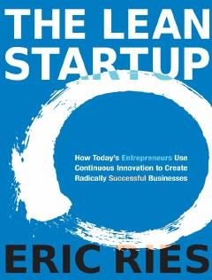

TLStartaplar uchun ilmiy asoslangan biznesni rivojlantirish va boshqarish bo'yicha qo'llanma.
Ushbu kitob tadbirkorlar uchun ilmiy yondashuvga asoslangan innovatsion biznes strategiyalarini taqdim etadi. Muallif Eric Ries startaplar muvaffaqiyatsizligini kamaytirish va mijozlar ehtiyojlarini tezroq tushunish uchun 'Lean' metodologiyasini qo'llashni o'rgatadi.